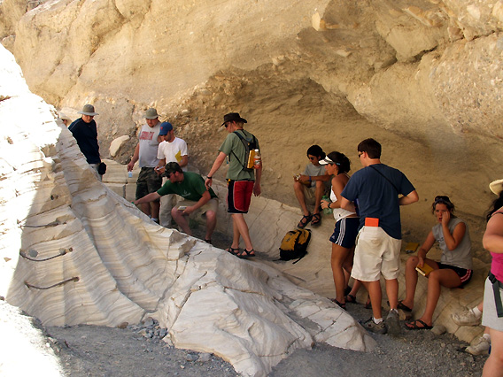
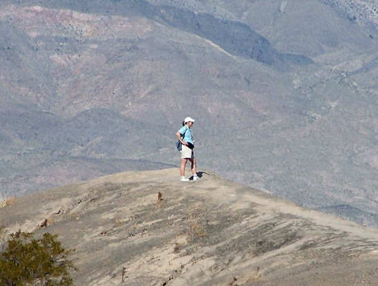
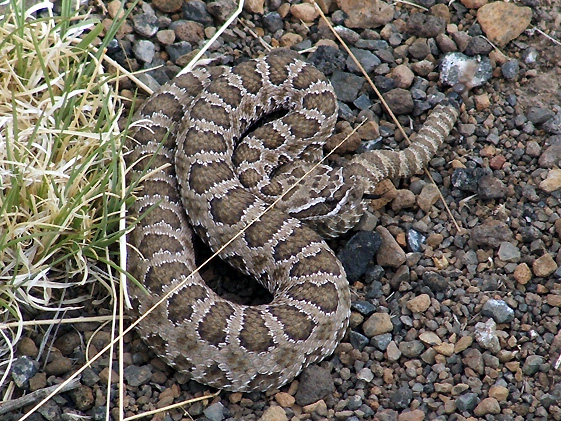
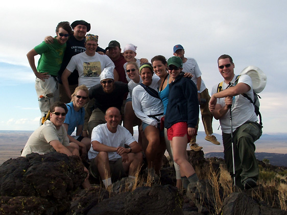
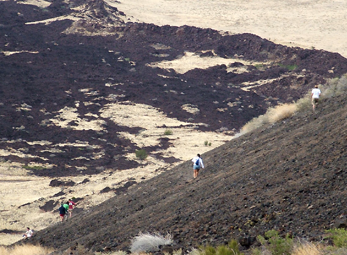
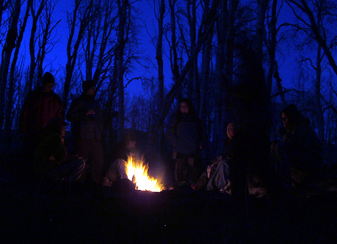
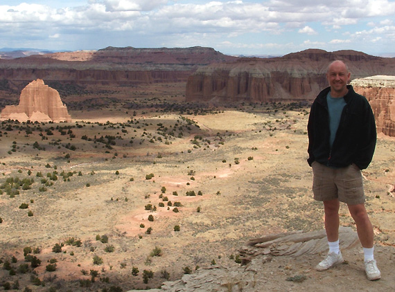
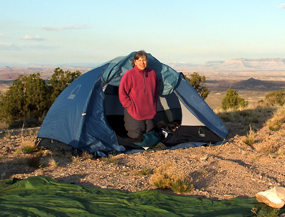
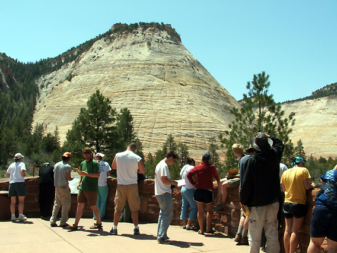

A group photo at the Pfizer talc mine, Warm Springs, southern Death Valley, May 1.

A group photo at the Pfizer talc mine, Warm Springs, southern Death Valley, May 1. |
|
|  |
The group explores Mosaic Canyon, near Stovepipe Wells, central Death Valley, May 1 |
Annie Holmes studies the cratered landscape of the Ubehebe volcanic field, northern Death Valley, May 2. |
 |
|  |
A young rattlesnake on the grassy slopes near SP Crater, San Francisco volcanic field, northern Arizona. Note the extended tongue and the blurred tail. |
The 2006 UTC SP assault team on the rim of SP Crater, May 3. |
 |
|  |
Students "glissade" in loose tephra down the side of SP Crater. |
Part of the group enjoys a warm fire on Boulder Mountain, near Capitol Reef National Park in south-central Utah, May 5. |
 |
|  |
Yours truly at the overlook of Cathedral Valley, Capitol Reef National Park, May 6. |
Annie emerges from her tent on a brisk morning in the San Rafael Swell, central Utah, May 7. |
 |
|  |
Students view Checkerboard Mesa in Zion National Park, May 8. |